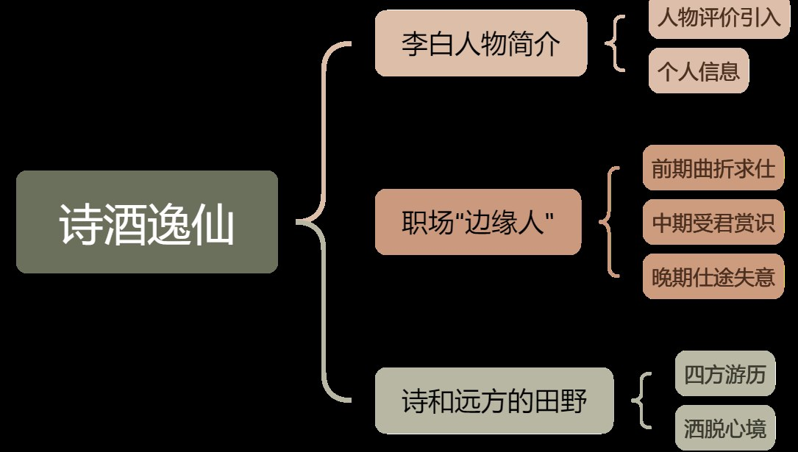
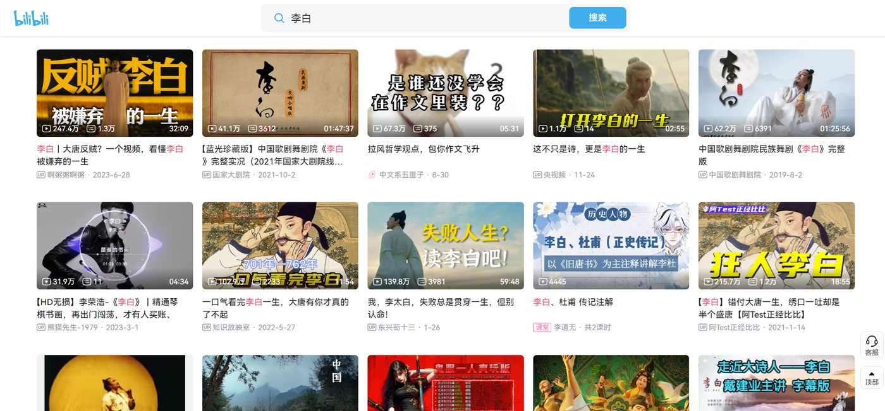
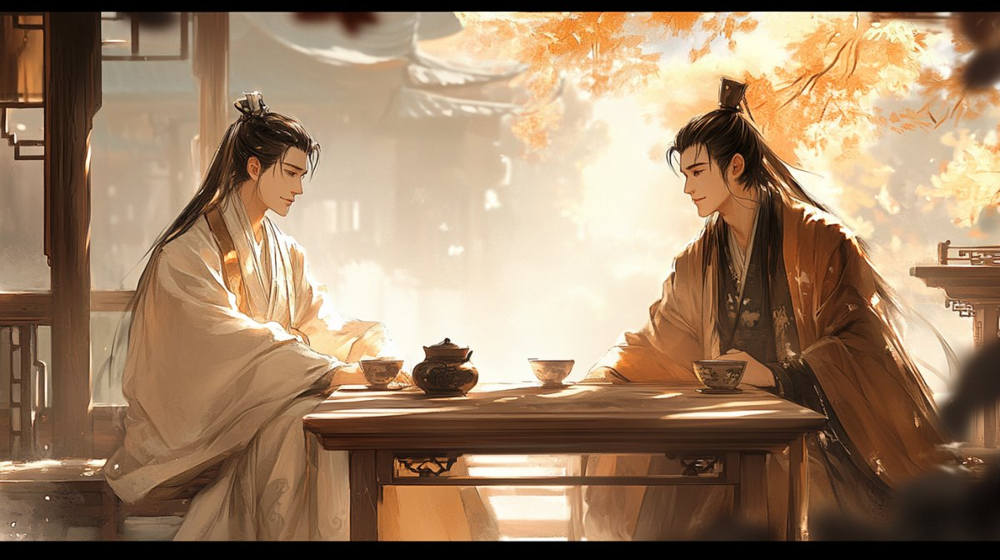
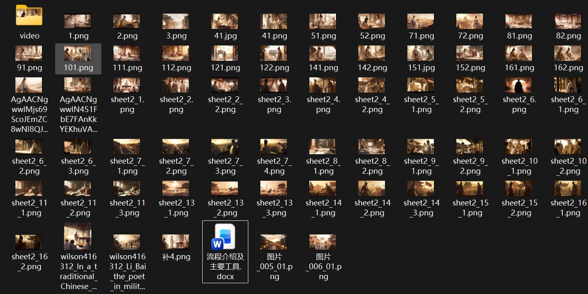
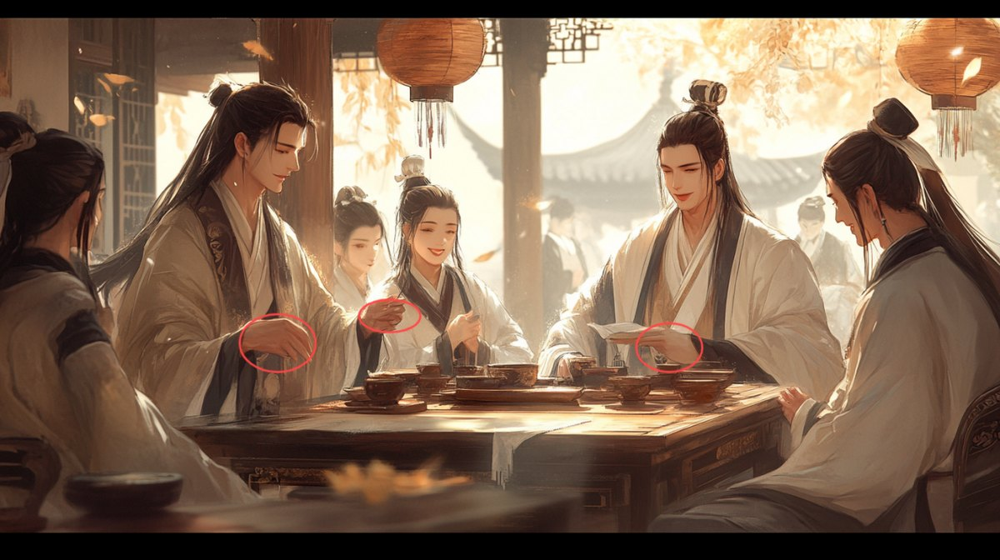
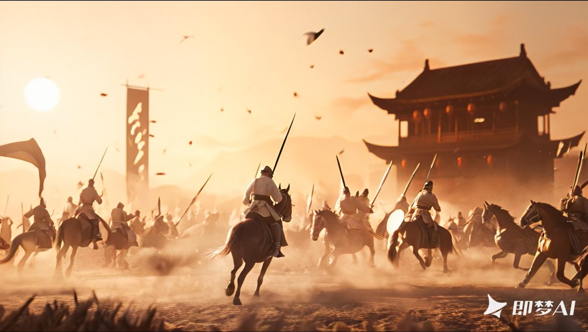
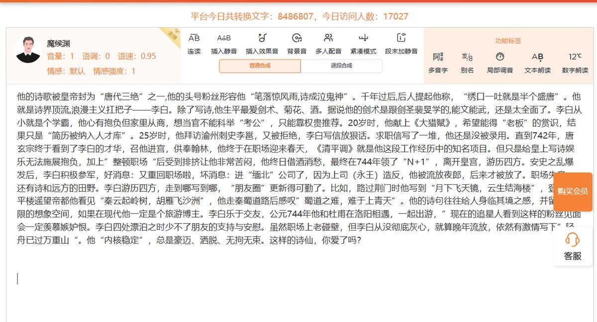

创作思路
从一个已经被讲透的题材里，找出我们这一版的立足点。
选题是李白，但"讲李白"这件事在短视频平台上早就被讲透了：从三小时的歌剧到五分钟的鬼畜混剪，几乎每一种讲法都已有对标。所以真正的问题不是"怎么讲李白"，而是"我们这一版凭什么是新的"。
①先解决"看不下去"
历史人物短片最容易拍成流水账：出生、入仕、贬谪、去世，配端庄旁白。这类内容在今天几乎不被看完。而 AIGC 又带来第二个麻烦——同一个人物，几乎每个镜头一张脸。
②用当代的词，给他换一个身份
切口因此换成"把李白当成一个当代人"来看：辞官是整顿职场，一路漫游是说走就走的旅游博主，被贬之后还写"轻舟已过万重山"是内核稳定。诗不打散，和人生节点交织着走，用诗句做转场和情绪落点。图生视频最怕镜头没有动机，先有了情绪依据，画面才站得住。

③先定锚点，再放大产能
画风我没有一开始就定，而是用 Midjourney 和奇域反复跑文生图，最后选定"传统国画笔触 + 数字绘画质感"的暖调风格，并锁定一张图作为后续所有分镜的风格基准。这是整个流程里我最看重的一步：把"风格"从一个形容词，变成一个可以反复调用的锚点。否则每生成一张图，都要重新吵一遍"这是不是我们要的感觉"。

创作路径
从文案到成片，中间是一条四段的流水线，每一段都留着人工介入的接口。
这条流程不是一次设计出来的，是被返工逼出来的：先想当然地"给提示词就行"，撞墙之后才一步步加上垫图、权重、首帧、并行抽卡，最后固化成下面四段。
脚本与分镜
横向看同类历史人物短视频，定文案框架；查史料，选出关键人生节点与代表诗作；文案写成口语、带梗的表达。定稿后输入 onestory 生成分镜表，再逐格改：增删画面、调构图、写明镜头运动、解说词与声音设计，把 AI 的粗表改成可执行的拍摄级脚本。
文生图
分镜先译成英文并压成关键词，再进 Midjourney 垫图：--sref 锁风格（--sw 调风格权重）、--cref 锁人物（--cw 控制只垫脸还是连发型全身一起垫）、--ar 16:9 统一画幅。一次出四张选一张，局部不满意就框选重绘。
图生视频
每张分镜图作为首帧，配一句简短的动作与镜头描述——刻意用简单句，避免模型理解跑偏——在即梦、可灵、清影、Runway、海螺上并行抽卡，横向比对后取最贴脚本的一条。
配音与后期
用琅琅配音、科大讯飞试音色、语速、停顿与情感强度，逐句调参；再按分镜顺序拼合、对节奏、压混音，把散落的片段收成完整叙事。


创作难点
四处失控：三处关于画面，一处关于声音。
①风格漂移
同一套 --sref／--cref 和权重喂进去，人脸镜头依然在漫画风与写实风、2D 感与 3D 感之间跳。处理办法是提高 --cref 权重、固定参考图，再在设计上让步：优先保留构图稳、光影统一的镜头，接受"能用"而不是"完美"。这是我第一次明确意识到，AIGC 的产出不是"要什么给什么"，而是在约束下采样。
②细节崩塌
Midjourney 画手很差，多人场景尤其明显；图生视频里更糟——五指在帧与帧之间融成四指，正脸的眼鼻糊成一团。应对不是继续堆提示词，而是改分镜：避开手部特写、多用侧脸与远景、减少多人同框、把动作幅度压小。把模型的短板前置到分镜设计里，比事后修提示词有效得多。

③模型不听话
有的模型为了凑时长自己加戏，加一些脚本里根本没有的东西；有的干脆不动，只在原图上叠一层"飘花"噪点充数。于是我把它当成一个变量，做了一轮横向对比：
| 工具 | 出片速度 | 画质 | 对提示词的服从 | 我的结论 |
|---|---|---|---|---|
| 即梦 | 快 | 质量稍高 | 较好，人物细节尚可 | 主力，多数镜头先在它这里跑 |
| 可灵 | 极慢 | — | — | 弃用，产能跟不上 |
| 清影 | 一般 | 清晰度低，质量飘忽 | 不稳，有时只叠一层噪点 | 弃用 |
| Runway | 一般 | 高 | 低，爱自由发挥 | 少量使用，只给动作简单的镜头 |
| 海螺 | 极慢 | 一般，人脸易崩 | 中 | 弃用 |

④声音的缺口
AI 配音的音色库已经很成熟，甚至能听出"市面主流视频同款"，但语气的诙谐感和节奏的松紧仍需逐句手调参数，做不到按文本判断。这一版文案偏活泼，最终只有李白的诗句朗诵交给 AI，其余走人工。这是整条流水线上唯一没能自动化的环节。

一些思考
片子做完，更值得留下的是这几条判断——它们在下个项目里还成不成立。
可控性来自参考系，不来自形容词
写"cinematic lighting、delicate brushwork"这类描述，模型每次给的都不一样；真正锁住风格的是参考图加权重。做 AIGC 项目，前期最该投入的不是写更长的提示词，而是找到一个足够稳定的锚。这也是我认为 AIGC 产品真正要解决的事：把"感觉"翻译成可设定、可复现的参数。
能力边界应该写进需求文档，而不是留给返工
模型的短板是确定的——手、正脸、复杂连续动作、长时长叙事——那就该在分镜阶段绕开它。把技术约束翻译成创作约束，是这一环里最像产品经理的工作：不是找最强的模型，而是设计一条让不够强的模型也不出错的路。
人的价值在判断，不在产能
四张选一张、六个平台选一条、哪个镜头留、哪个节奏砍，全是取舍。AI 提供可能性与产量，人负责一致性、叙事和"这片子到底想说啥"。反过来也成立：前期没把风格和叙事定清楚，AI 只会更快地生产出更多不一致的素材。
"最强"不等于"最合适"
画质最好的 Runway 反而是成片里用得最少的一个，因为它不可控的成本高过画质带来的收益。选模型、选方案、选合作方，是同一道题：先算稳定的成本，再算上限的收益。
如果再拍一支，我会改一件事：开题阶段先做一轮模型能力测试，用三五个典型镜头把候选工具的速度、画质、服从度跑一遍，再反过来写分镜。这次是"先写脚本、再撞墙、再改脚本"，绕了一个大圈。
这支片子的成片在这里；比成片更容易复用的，是这四段流程和上面那四条判断。
成片观看链接 在哔哩哔哩观看成片 ↗